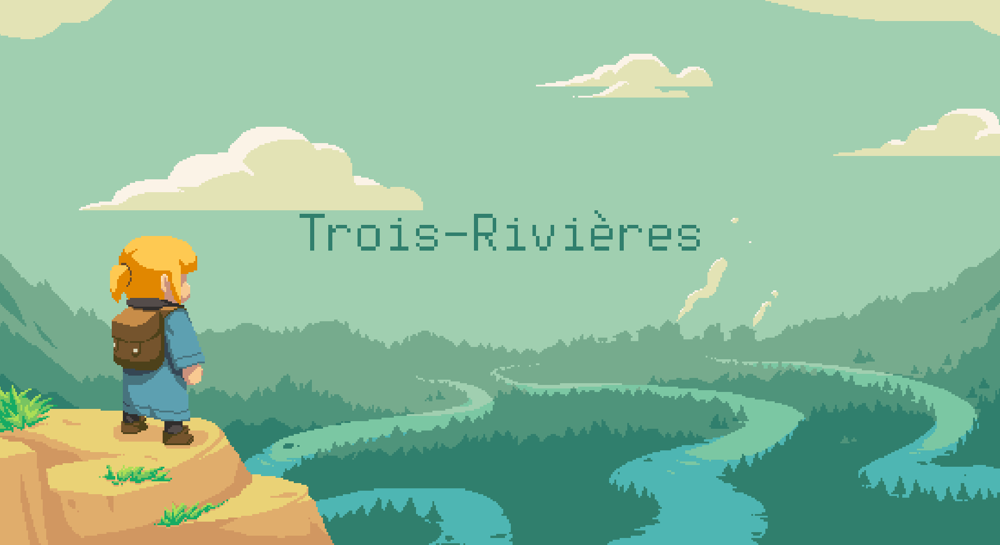
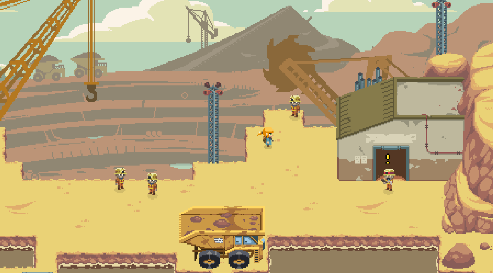
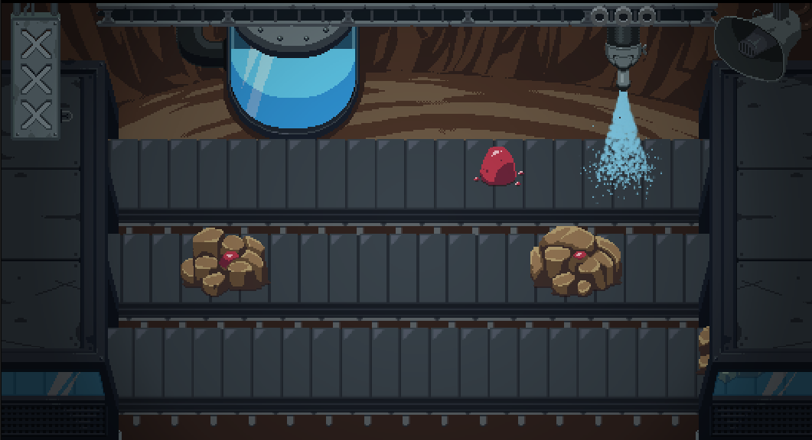
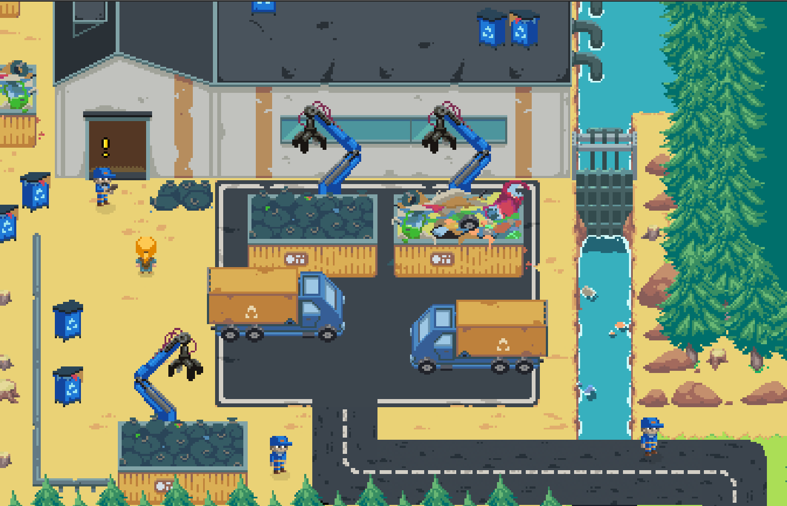
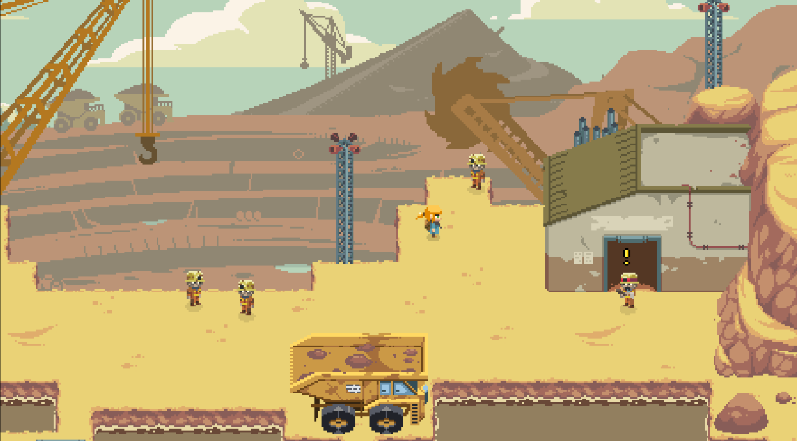
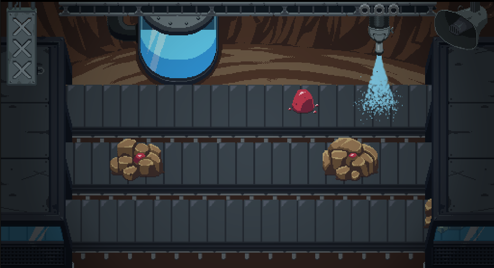
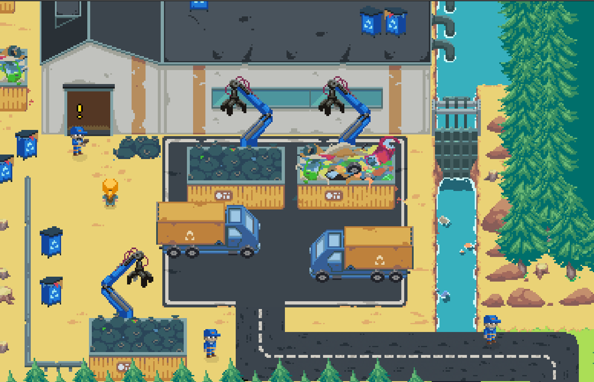

Dossier de presse Trois-Rivières

Maï est une randonneuse qui fait la découverte du charmant village de Trois-Rivières et la connaissance de ses habitants qui vivent heureux dans une forme de sobriété. Le nom du village est donné par les trois affluents qui se rejoignent dans le hameau. Une de ces rivières est atteinte d'une pollution, bouleversant la quiétude du village. Maï se met en quête de comprendre l’origine de la catastrophe.
Ce jeu d'action-aventure en pixel-art d'une durée d'environ 30 minutes et destiné à un large public à partir de 11 ans traite des impacts environnementaux et sociaux de la fabrication des équipements numériques (mine, usine d'assemblage, usine de recyclage) et les conséquences de ces industries sur un village.
Jeu publié le 17 décembre 2025 gratuitement en ligne dans un navigateur web pour PC, mobiles et tablettes.
Idée originale, game design et programmation :
Richard Hanna.
Graphisme, level design et game design :
Philippe Salib.
Game design, narration, musiques et effets sonores :
David Fonteix.
Aperçu
 





Contact
Richard Hanna
06 98 48 36 11
contact@richardhanna.dev